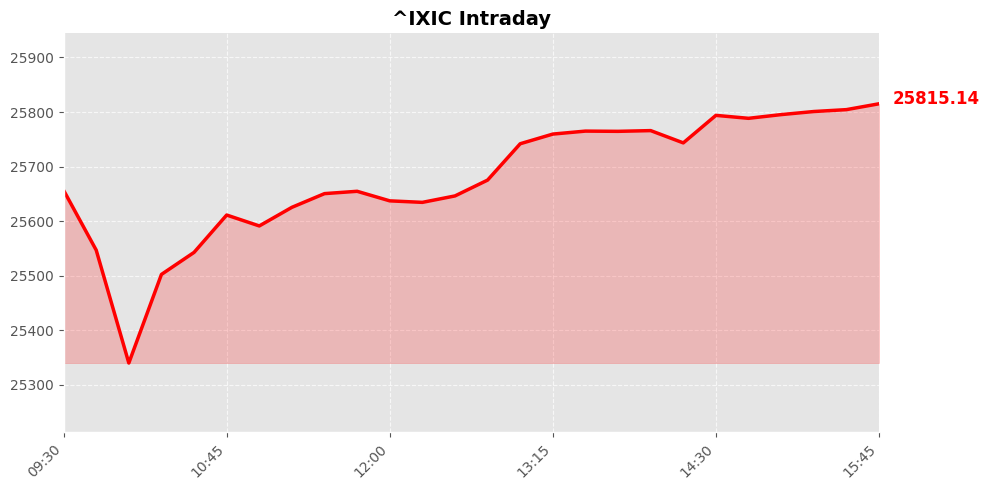
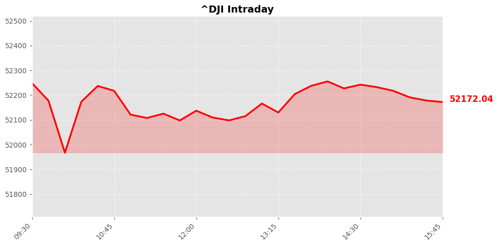
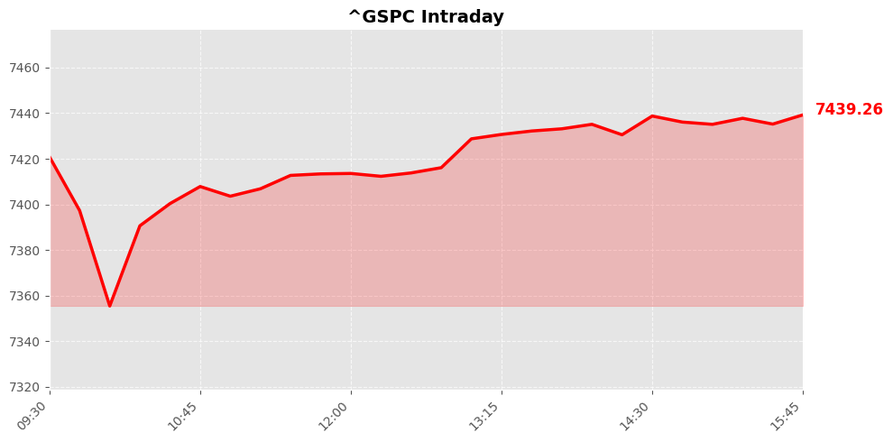

美股市场简报
2026年06月30日 | StockGate 美股通
📊 市场概览
纳斯达克指数 25820.14 ▲ +522.53 (+2.07%)

道琼斯指数 52182.74 ▲ +306.63 (+0.59%)

标普500指数 7440.43 ▲ +86.41 (+1.18%)

美股市场呈现全线收涨格局，科技股引领的强势反弹成为当日最大亮点。纳斯达克指数大涨2.07%至25820.14点，涨幅最为突出，反映出市场对科技成长股的乐观情绪显著回升。标普500指数上涨1.18%至7440.43点，突破关键阻力位，延续上行趋势。道琼斯指数温和上涨0.59%至52182.74点，表现相对稳健但涨幅落后于科技类指数。
从市场驱动因素来看，科技板块的强劲表现可能源于人工智能领域利好消息持续发酵，叠加大型科技公司财报预期向好的推动。纳斯达克道琼斯之间约1.5个百分点的涨幅差异，说明资金明显从传统板块流向科技成长股，呈现出典型的板块轮动特征。整体市场情绪偏向积极，风险偏好有所上升。不过投资者仍需关注后续通胀数据和美联储政策动向，以判断这轮反弹的可持续性。
📰 今日要闻
今日市场主要关注地缘政治紧张局势缓和与科技股反弹，美伊双方即将在多哈进行和谈，打击行动减少推动风险偏好回升，主要股指收涨，大型科技股表现强劲。同时，企业并购活动活跃，Salesforce在六月已完成三笔收购交易，显示AI领域整合加速，但华尔街对其战略仍存疑虑。美联储审批流程优化值得关注，Eli Lilly和Regeneron等七家公司入选FDA PreCheck试点计划，将加速新生产设施审查，利好制药行业效率提升。
潜在市场影响因素包括本周就业报告预期分歧，Kalshi交易员认为新增就业可能低于10万，远低于道琼斯预期的11.8万，若数据疲软可能强化降息预期。地缘政治风险虽有缓和迹象，但美伊谈判不确定性仍存，任何升级都可能逆转市场情绪。企业分拆趋势延续，Comcast计划分拆NBCUniversal的电缆与媒体业务，可能引发更多并购，但优质标的稀缺。Honeywell Aerospace分拆后获得积极评级，积压订单充足且需求强劲，显示航空防务板块韧性。
值得关注的行业动向集中在半导体与网络安全领域，芯片股反弹反映AI基础设施投资持续，高盛在并购咨询中屡获成功显示投行业务回暖。网络安全股飙升表明地缘政治紧张推动防御需求，大型科技股尝试反弹则显示成长股估值压力有所缓解。医疗板块受益于审批加速，而特朗普账户政策可能间接影响女性退休储蓄，但整体影响有限。投资者需密切关注就业数据与企业盈利前景，以判断市场后续方向。
📈 宏观经济数据
💰 利率与货币政策
联邦基金利率： 3.6% -0.0个百分点 （前值: 3.6%）
观察日期: 2026-05-01 | 下次公布: 2026-07-29
10年期国债收益率： 4.4% -0.0个百分点 （前值: 4.4%）
观察日期: 2026-06-26 | 下次公布: 2026-06-30
🔥 通胀指标
消费者物价指数(CPI)： 4.2% +0.4个百分点 （前值: 3.8%）
观察日期: 2026-05-01 | 下次公布: 2026-07-14
PCE物价指数： 4.1% +0.3个百分点 （前值: 3.8%）
观察日期: 2026-05-01 | 下次公布: 2026-07-30
核心PCE物价指数： 3.4% +0.1个百分点 （前值: 3.3%）
观察日期: 2026-05-01 | 下次公布: 2026-07-30
生产者物价指数(PPI)： 6.4% +0.8个百分点 （前值: 5.7%）
观察日期: 2026-05-01 | 下次公布: 2026-07-15
👷 就业指标
非农就业人数变化： 159001.0K +172.0K （前值: 158829.0K）
观察日期: 2026-05-01 | 下次公布: 2026-07-03
失业率： 4.3% 0.0个百分点 （前值: 4.3%）
观察日期: 2026-05-01 | 下次公布: 2026-07-03
🛒 消费者指标
零售销售月度变化： 0.9% +0.5个百分点 （前值: 0.4%）
观察日期: 2026-05-01 | 下次公布: 2026-07-16
个人消费支出月度变化： 0.7% +0.3个百分点 （前值: 0.4%）
观察日期: 2026-05-01 | 下次公布: 2026-07-30
🔮 市场展望
美股主要指数在上一交易日全线收涨，纳斯达克指数表现尤为强劲，上涨超过2%，道琼斯指数和标普500指数也录得涨幅。市场情绪受到伊朗局势缓和预期的积极影响，地缘政治风险溢价有所回落，推动资金回流风险资产。科技板块领涨，反映出市场对人工智能相关交易和并购活动的持续热情。未来1-2个交易日，市场有望维持上行惯性，但需要警惕地缘政治谈判的不确定性可能带来的震荡整理风险。
投资者应密切关注伊朗和谈的最新进展，这是当前影响市场情绪的核心变量。同时，Salesforce等科技巨头的AI并购动态和Comcast分拆交易可能继续为相关板块提供催化剂。从风险因素来看，若谈判出现反复或意外升级，可能迅速逆转当前的市场乐观情绪。此外，市场对科技股估值和AI商业化进程的质疑依然存在，短期内可能限制进一步上行的空间。建议投资者保持适度仓位，关注地缘政治谈判结果和后续经济数据发布对市场情绪的影响。
数据来源：Yahoo Finance / Finnhub / Alpha Vantage / FRED / Reddit
报告生成：2026-06-30 05:30
⚠️ 免责声明：美股市场简报 - 2026年06月30日。StockGate 美股通 - 本报告仅供参考，不构成投资建议。投资有风险，入市需谨慎。
🔥 扫码加入【股神星】专属群 🔥
扫码加入股神星交流群，一起享受财富人生
📱 下载飞书App，扫描二维码入群
获取更多美股投资洞察与实时动态